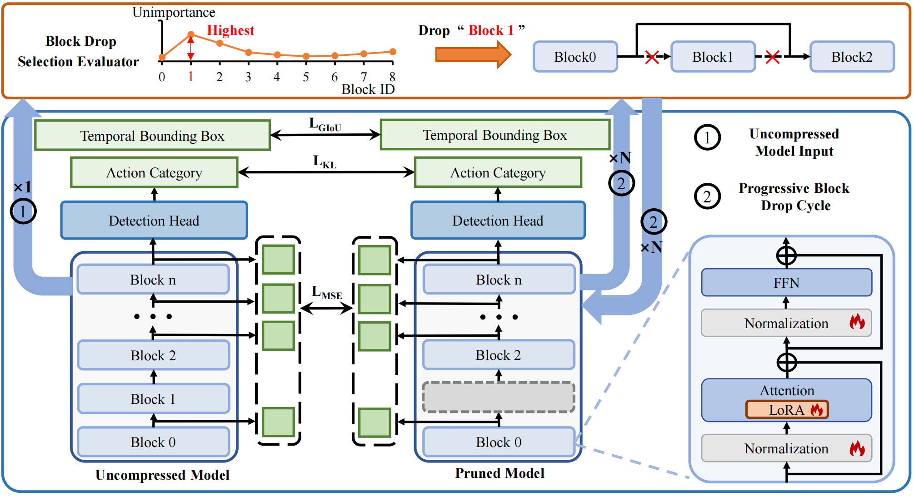
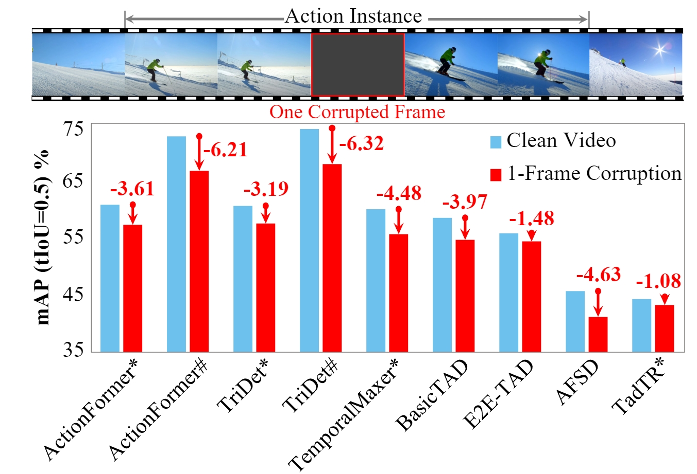
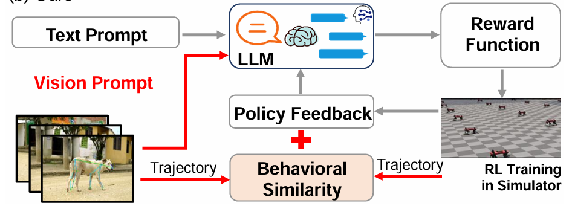
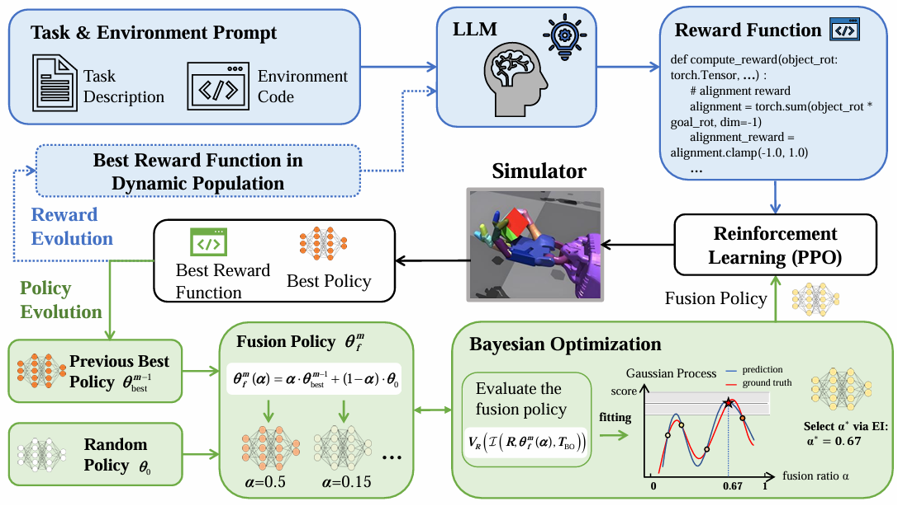
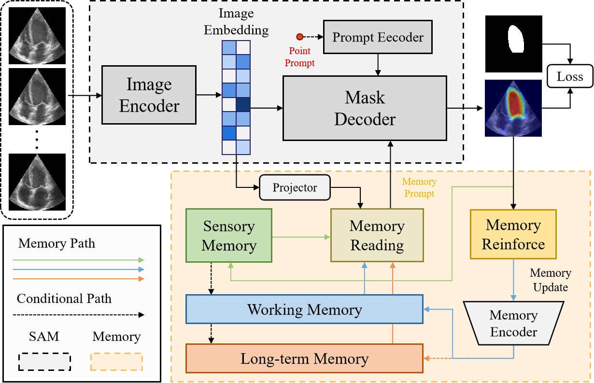
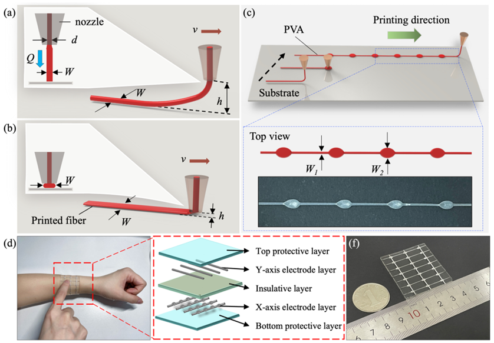

CVPR 2025
Temporal Action Detection Model Compression by Progressive Block Drop
Compressing temporal action detection models by progressively removing redundant blocks, toward efficient deployment.
Research Group
Associate Professor, Artificial Intelligence Research Institute
Shenzhen MSU-BIT University
Our group studies embodied affective intelligence — enabling AI systems to understand what people do, infer how they feel and why, and actively perceive and interact with humans in dynamic environments. Our research builds from human action understanding to affective understanding and ultimately to embodied affective intelligence.
I received my Bachelor’s Degree in Automation in 2015 and my Ph.D. in Software Engineering in 2021, both from the South China University of Technology, under the supervision of Prof. Mingkui Tan.
Featured Research
A Controllable Interactive 3D Simulation Benchmark for Embodied Affective Perception
AffectSim moves affective computing beyond fixed recordings by placing emotion-expressive human behavior in controllable, replayable 3D environments. It enables us to study not only what an agent perceives, but also where it observes from and how active sensing changes affective understanding.
Research Vision
We study a progressive question: from observable human behavior, to latent affective states, and finally to agents that can actively seek affective evidence and interact with people.
What are people doing, and when?
Temporal localization, grounding, long-video understanding, robustness, and efficiency for dynamic human behavior.
02How do people feel, and why?
Moving from observable behavior to latent affect through body motion, temporal context, multimodal evidence, and foundation models.
03What should an agent observe, and how should it interact?
Active observation, simulation, embodied sensing, and interactive decision-making for affective intelligence in dynamic environments.
Our earlier and continuing work asks how machines can reliably understand what people do over time. We study temporal action localization, video grounding, long-video understanding, and robust and efficient video models — providing the perceptual foundation for reasoning about human affect.
Featured Work

Compressing temporal action detection models by progressively removing redundant blocks, toward efficient deployment.

A systematic benchmark for understanding how temporal corruptions affect action detectors in realistic video conditions.

Localizing language-described moments in untrimmed video with dense temporal regression.
Selected work across temporal localization, grounding, long video, robustness, and efficiency.
Behavior is observable; affect is latent. We study how machines can move beyond recognizing visible actions to infer affective states from body behavior, temporal context, multimodal evidence, and the events behind observable expressions — including cases where appearance alone can be misleading.
Featured Work

An agentic framework that seeks, verifies, and explains affective moments in long videos under vague natural-language queries.

A mechanistic study of where affective adaptation is encoded inside multimodal foundation models.

An agentic multimodal framework that integrates textual, acoustic, and visual evidence and explicitly deliberates across modalities for depression risk assessment.
Additional work on affective behavior, multimodal affect, and psychological-state understanding.
Real-world affect is not always visible from a fixed viewpoint. We therefore study agents that can actively observe, move, seek evidence, and interact to reduce uncertainty about human affect. This direction connects affective computing with embodied perception, simulation, robot learning, and interactive intelligence.
Featured & Supporting Work

A simulation benchmark in which affective behavior can be re-observed under controllable viewpoints and agent-controlled sensing.

Learning robot behavior by turning visual demonstrations into reward functions, connecting video understanding with embodied action.

Co-evolving reward functions and policies for language-instructed embodied skill acquisition.
Additional work in embodied perception, navigation, and robot learning.
Selected Applications
Beyond our main research trajectory, we are interested in applying multimodal perception and learning to selected healthcare and human-centered problems.

Adapting foundation segmentation models to noisy, temporally evolving cardiac ultrasound video.
Paper
Combining flexible sensing with intelligent recognition for human motion and interaction.
PaperPublications
Publications are organized around the research trajectory of human action → affect → embodiment, with additional work in multimodal AI and human-centered applications.
This page highlights publications most relevant to the research story above. For the complete and continuously updated record, please see Google Scholar or DBLP.
Updates